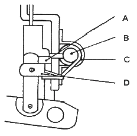
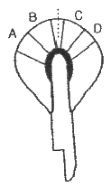
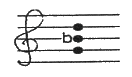
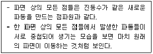

피아노조율산업기사 (2010-05-09 기출문제)
1과목: 임의 구분
1. 피아노에 사용하는 재료에 대한 설명으로 옳지 않은 것은?
- 피아노에 사용하는 목재는 함ㅅ율 3~14%의 범위로 균등하게 인공 건조한 것을 사용하여야 한다.
- 건 및 향판은 가문비나무를 사용한다.
- 핀판은 스프루스를 사용하는 것이 가장 좋다.
- 브리지의 핀 유지부는 자작나무 또는 매플을 사용한다.
(정답률: 알수없음)

2. 다음 중 피아노 향판의 두께를 옳게 나타낸 것은?
- 고음부 : 9~10mm, 저음부 : 6~7mm
- 고음부 : 11~12mm, 저음부 : 4~5mm
- 고음부 : 6~7mm, 저음부 : 9~10mm
- 고음부 : 4~5mm, 저음부 : 11~12mm
(정답률: 알수없음)
3. 바닥면에서 피아노 백건면까지의 높이는 어느 정도로 해야 하는가?
- 640~750mm
- 840~950mm
- 1040~1150mm
- 1240~1350
(정답률: 알수없음)
4. 바닥면에서 페달의 앞 끝 윗면까지의 높이로 가장 적절한 것은?
- 5~15mm
- 25~35mm
- 45~75mm
- 85~95mm
(정답률: 알수없음)
5. 피아노에 주로 사용되고 있는 피아노 선(강선)의 선번호는?
- No.1 ~ No.20
- No.13 ~ No.26
- No.1 ~ No.26
- No.10 ~ No.30
(정답률: 알수없음)
6. 다음 중 향봉에 대한 설명으로 틀린 것은?
- 향판 나무결의 직각방향으로 붙여져 있다.
- 향판의 진동을 돕는 역할을 한다.
- 향판과 같은 재질을 사용한다.
- 향판과 마찬가지로 주로 음을 크게 증폭시켜 주는 역할을 한다.
(정답률: 알수없음)
7. 댐퍼 액숀의 일부인 다음 그림에서 소스테누토 탭(Sostenuto Tab)에 해당되는 것은?

- A
- B
- C
- D
(정답률: 알수없음)
8. 피아노 선 23번의 지름은 몇 mm 인가?
- 1.225+0.015mm
- 1.300+0.015mm
- 1.400+0.015mm
- 1.500+0.015mm
(정답률: 알수없음)
9. 건반의 원칙적인 하강하중은 어느 정도가 가장 적합한가?
- 0.098 ~ 0.39 N
- 0.39 ~ 0.74 N
- 1.12 ~ 1.58 N
- 2.34 ~ 3.56 N
(정답률: 알수없음)
10. 피아노 흑건의 윗면 폭은 몇 mm 인가?
- 5.0 ~ 6.5mm
- 7.0 ~ 8.5mm
- 9.0 ~ 10.5mm
- 11.0 ~ 12.5mm
(정답률: 알수없음)
11. 다음 중 음정비가 옳지 않은 것은?
- 장3도 – 4:5
- 장6도 – 3:5
- 단3도 – 5:6
- 단6도 – 4:8
(정답률: 알수없음)
12. 다음 주파수 중 장애물이 있을 때 가장 멀리까지 들리는 주파수는?
- 60 Hz
- 440 Hz
- 600 Hz
- 3000 Hz
(정답률: 알수없음)
13. 다음 중 장3도의 보족음정에 해당되는 것은?
- 단3도
- 단6도
- 장6도
- 장7도
(정답률: 알수없음)
14. G35 - C40 음정의 맥놀이수는 얼마인가? (단, G35는 195.9977 Hz 이고, C40 는 261.626 Hz 이다.)
- 0.6637
- 0.7772
- 0.8872
- 0.9941
(정답률: 알수없음)
15. 1m 의 강선이 G음을 낸다면 1/3 지점에 해당하는 강선은 무슨 음을 내는가?
- 1옥타브 위의 C음
- 1옥타브 위의 D음
- 1옥타브 위의 E음
- 1옥타브 위의 F음
(정답률: 알수없음)
16. A49가 10센트 낮으면 그 진동수는 약 몇 Hz 인가? (단, A49는 440 Hz 이다.)
- 437.531
- 438.251
- 438.735
- 439.831
(정답률: 알수없음)
17. 평균율 장3도는 순정율 장3도보다 약 몇 센트 넓은가?
- 4센트
- 8센트
- 14센트
- 16센트
(정답률: 알수없음)
18. D42 - G35 음정의 맥놀이수는 약 얼마인가? (단, D42는 293.6643 Hz이고, G35는 195.9977 Hz 이다.)
- 0.59
- 0.66
- 0.79
- 0.99
(정답률: 알수없음)
19. 기음이 200 Hz 일 경우, 세 번째 옥타브는 몇 Hz가 되는가?
- 400 Hz
- 800 Hz
- 1600 Hz
- 3200 Hz
(정답률: 알수없음)
20. 다음 중 완전5도와 완전4도의 음정비율에 대하여 옳게 나타낸 것은?
- 완전5도는 3:4이며, 완전4도는 2:3이다.
- 완전5도는 2:3이며, 완전4도는 3:4이다.
- 완전5도는 2:3이며, 완전4도는 4:5이다.
- 완전5도는 4:5이며, 완전4도는 2:3이다.
(정답률: 알수없음)
2과목: 임의 구분
21. 다음 중 주파수와 현의 관계를 설명한 것으로 옳은 것은?
- 주파수는 현의 밀도의 제곱근에 비례한다.
- 주파수는 현의 지름에 비례한다.
- 주파수는 현의 길이에 비례한다.
- 주파수는 현의 장력의 제곱근에 비례한다.
(정답률: 알수없음)
22. 어느 한 해머가 다른 해머에 비해 크고 강한 소리를 낸다면 다음 중 해머의 어느 부분을 니들링하는 것이 가장 바람직한가?

- A와 D
- A와 C
- B와 C
- B와 D
(정답률: 알수없음)
23. 인간의 귀에 들리는 최소 음의 크기를 0 dB(decibel)로 했을 때, 귀에 고통을 주는 음은 약 몇 dB 정도인가?
- 30
- 50
- 60
- 130
(정답률: 알수없음)
24. 여러 개의 음을 일정한 규칙에 따라 미적·시간적으로 연속 배열한 것을 무엇이라고 하는가?
- 리듬
- 하모니
- 멜로디
- 음률
(정답률: 알수없음)
25. 다음 악보는 무슨 화음에 해당하는가?

- 장3화음
- 단3화음
- 증3화음
- 감3화음
(정답률: 알수없음)
26. 다음에서 설명하는 원리와 가장 관련 있는 것은?

- 라우드니스(Loudness)
- 양이(Binaural)
- 음폐(Masking)
- 호이겐스(Huygens)
(정답률: 알수없음)
27. 다음 중 증3화음에 해당하는 것은?
- 단3도 + 감5도
- 단3도 + 완전5도
- 장3도 + 증5도
- 장3도 + 완전5도
(정답률: 알수없음)
28. 다음 중 온음 3개와 반음 1개로 구성된 음정은?
- 장3도
- 단7도
- 완전5도
- 단3도
(정답률: 알수없음)
29. 그랜드 피아노의 정음 방법 중 니들링(needling) 작업에 대한 설명으로 옳은 것은?
- 니들링을 할 때는 해머우드까지 깊이 찌른다.
- 타현점 부분의 니들링 작업은 가급적 피한다.
- 니들링을 할 때 바늘길이를 가급적 2~3mm로 한다.
- 니들링을 하고 난 후 해머를 굵은 사포로 다시 성형한다.
(정답률: 알수없음)
30. 음의 세기(intensity) 단위를 옳게 나타낸 것은?
- dyne/cm2
- Hz
- erg/sec/cm2
- N/m2
(정답률: 알수없음)
31. 20℃에서 음의 속도가 344m/s 일 때 0.002초 동안 음의 전파 거리는 약 얼마인가?
- 17cm
- 34cm
- 56cm
- 69cm
(정답률: 알수없음)
32. 현의 진동시 발생하는 에너지를 손실없이 음향판에 전달하기 위해 가장 필요한 작업은?
- 현과 브리지의 밀착
- 현과 해머의 면 맞춤
- 해머와 백첵의 일치
- 해머와 현 간격의 일치
(정답률: 알수없음)
33. 귀의 구조를 외이, 중이, 내이로 구분할 때 중이에 해당되지 않는 것은?
- 망치뼈
- 달팽이관
- 등자뼈
- 고실
(정답률: 알수없음)
34. 귀의 구조 중 귀의 바깥쪽에서부터 고막까지 사이의 구멍으로서 공명 역할을 담당하는 부분은?
- 귀바퀴
- 외이도
- 기저막
- 유스타키오관
(정답률: 알수없음)
35. 8도 음정 사이의 온음계(全音階)에는 각각 몇 개의 반음과 온음이 있는가?
- 반음 : 1개, 온음 : 4개
- 반음 : 1개, 온음 : 5개
- 반음 : 2개, 온음 : 4개
- 반음 : 2개, 온음 : 5개
(정답률: 알수없음)
36. 다음 음정 중 불협화 음정에 해당되는 것은?
- 장3도
- 장2도
- 장6도
- 단6도
(정답률: 알수없음)
37. 실내음향 설계시 구비해야 할 사항이라고 볼 수 없는 것은?
- 명룡(鳴龍) 현상이 방 전체에 골고루 퍼지도록 한다.
- 방의 크기와 목적에 맞도록 잔향 시간을 결정한다.
- 차음을 잘 하여 방해되는 소음이 없도록 한다.
- 방 전체에 음장(音場) 분포가 잘 되도록 한다.
(정답률: 알수없음)
38. 기저막이 소리의 크기 및 주파수를 분별한 후, 어떠한 신호로 바뀌어 청각 신경계통을 거쳐 뇌에 전달하는가?
- 골격신호
- 전기적인 신호
- 증폭녹음과 진동신호
- 기압조정신호
(정답률: 알수없음)
39. 등감 곡선(라우드니스 곡선)에 대한 설명으로 틀린 것은?
- 같은 크기로 느껴지는 순음을 주파수에 따라 구한 곡선이다.
- 등감 곡선에 의한 라이드니스 레벨의 단위는 폰(Phon) 이다.
- 인간의 귀가 들을 수 있는 음압레벨은 0 ~ 120dB 정도이고, 120dB 이상이면 통증을 느낀다.
- 음압을 차츰 적게 하여 겨우 들을 수 있는 최소 가청치는 100Hz의 순음에서 음압이 2×103(N/m2)이다.
(정답률: 알수없음)
40. 다음 음정에 대하여 온음과 반음을 잘못 나타낸 것은?
- 완전4도 : 온음 2개, 반음 1개
- 단6도 : 온음 3개, 반음 2개
- 장7도 : 온음 5개, 반음 1개
- 장6도 : 온음 4개, 반음 2개
(정답률: 알수없음)
3과목: 임의 구분
41. 조율을 하다가 점핑핀(jumping pin)이 나왔을 때 가장 적합한 수리 방법은?
- 핀을 빼고 핀구멍에 윤활유를 주입한다.
- 핀을 망치로 조금 때려 박는다.
- 핀 구멍에 나무 조각을 넣은 후 핀을 박는다.
- 조율핀 나사산에 백물을 칠한 후 다시 박는다.
(정답률: 알수없음)
42. 댐퍼의 동작이 잘 이루어지지 않는 원인에 대한 설명으로 옳지 않은 것은?
- 댐퍼레버 플랜지 센터핀이 빡빡하다.
- 댐퍼 와이어가 백레일에 닿아 내려오지 않는다.
- 가이드 홀이 빡빡하다.
- 건반 무게가 정상보다 무겁게 조정되었다.
(정답률: 알수없음)
43. 오래 사용한 페달이 좌우로 흔들릴 때 가장 올바른 수리방법은?
- 페달 구멍 좌우에 펠트를 고여 준다.
- 페달 센터핀을 굵은 것으로 바꿔 준다.
- 페달 브래킷의 플라스틱 또는 플랜지 클로스를 바꿔 준다.
- 페달 브래킷이나 플랜지 나사못을 조여 준다.
(정답률: 알수없음)
44. 건반 좌우 흔들림은 몇 mm 가 가장 적당한가?
- 0.3
- 0.5
- 0.7
- 0.9
(정답률: 알수없음)
45. 다음 중 해머드롭(drop)에 대하여 가장 옳게 설명한 것은?
- 해머접근 공정이 완료됨과 동시에 해머가 밑으로 떨어지다가 레피티션 레버 위에 내려와 정지하기까지의 과정
- 해머접근 완료 후 레피티션 레버가 정지하면서 해머를 움직이게 할 때까지의 과정
- 레피티션 레버가 애프터터치를 만드는데 해머헤드가 상승하면서 현을 치는 그 때의 과정
- 해머접근 후 드롭 위치가 좌우로 변하여 스프링의 힘으로 해머를 움직이게 하는 과정
(정답률: 알수없음)
46. 그랜드 피아노의 로라스킨을 교환할 때 가장 좋은 방법은?
- 스킨 두께에 관계없이 접착제를 전면에 칠해서 붙인다.
- 스킨 두께가 같은 것으로 접착제를 전면에 칠해서 붙인다.
- 스킨 두께가 같은 것으로 느슨하게 붙인다.
- 스킨 두께가 같은 것으로 양단만 접착제를 칠해서 팽팽하게 붙인다.
(정답률: 알수없음)
47. 그랜드 피아노의 소스테누토 페달의 주된 역할은?
- 연주시 음색을 변경시킬 때 사용하는 페달이다.
- 연주시 음량을 증가시킬 때 사용하는 페달이다.
- 건반을 쳐서 아무런 효과가 없게 하는 역할을 한다.
- 연주시 어느 특정 음을 지속시켜 주는 역할을 한다.
(정답률: 알수없음)
48. 많은 타현으로 해머 헤드에 현 자국이 많을 때 수리하는 방법을 무엇이라 하는가?
- 파일링
- 니들링
- 도우핑
- 보이싱
(정답률: 알수없음)
49. 현의 불량으로 전체 또는 대부분을 교체해야 할 경우 현을 푸는 방법으로 옳은 것은?
- 순서에 관계없이 작업에 편리한 대로 푼다.
- 현을 풀 때는 저음부터 고음 쪽으로 차례로 푼다.
- 한 핀 건너 한 핀 순으로 풀면서 장력을 점점 떨어지게 하여 푼다.
- 현을 풀 때는 고음부터 저음 쪽으로 차례로 푼다.
(정답률: 알수없음)
50. 건반 수평 고르기를 할 때 펀칭(Punching) 사용에 대한 설명으로 가장 적합한 것은?
- 클로스 펀칭을 고인 후 그 위에 높이에 따라 종이 펀칭을 고인다.
- 반드시 종이 펀칭만을 필요한 높이만큼 고인다.
- 반드시 클로스 펀칭만을 필요한 높이만큼 고인다.
- 클로스 펀칭을 고인 후 그 밑에 높이에 따라 종이 펀칭을 고인다.
(정답률: 알수없음)
51. 밸런스 레일 스터드 조정 작업에 대한 설명으로 옳은 것은?
- 저음쪽과 고음쪽의 두 곳은 필히 밀착해야 하고 중앙 부분은 약간 떠 있게 조정한다.
- 스터드가 많이 돌출된 경우는 줄로 갈아낸다.
- 스크류와 맞닿는 부분은 흑연 또는 파우더를 묻혀 준다.
- 스크류가 전체적으로 얕을 땡는 조정할 필요가 없다.
(정답률: 알수없음)
52. 그랜드 피아노의 급속 반복 타현이 가능하도록 하는 것과 가장 관련 있는 것은?
- 레피티션 레버 스프링
- 백첵
- 해머드롭
- 잭
(정답률: 알수없음)
53. 타현점이 과다하게 마모된 해머 헤더의 수리방법으로 틀린 것은?
- 센딩 페이퍼의 거친 정도는 대략 #80~120 정도가 적합하다.
- 우선 타현 자국을 완전히 없앤 후 양쪽 옆면을 깎아 낸다.
- 파일링이 끝난 후에는 다림질과 약간의 니들링 작업이 필요한 경우도 있다.
- 페이퍼의 진행방향은 위나 아래에서 중심점을 향하여 진행한다.
(정답률: 알수없음)
54. 잭깊이 조정을 한 후 다음 중 변화가 가장 심하게 생기는 부분은?
- 타현거리
- 건반수평
- 건반깊이
- 렛오프
(정답률: 알수없음)
55. 건반 밸런스 홀이 헐거워졌을 때 수리하는 방법으로 가장 적절한 것은?
- 밸런스핀을 굵은 것으로 교환해 준다.
- 건반의 각도를 알맞게 조정해 준다.
- 밸런스핀 부싱 클로스에 본드를 칠한다.
- 헐거워진 구멍을 쐐기로 메운 후 새로 구멍을 뚫어 준다.
(정답률: 알수없음)
56. 프론트(Front) 홀에 붙이는 클로스는 홀 안쪽 부분에 몇 mm 정도가 되도록 붙여야 하는가?
- 3
- 6
- 9
- 12
(정답률: 알수없음)
57. 그랜드 피아노의 해머가 좌측으로 사진행할 때 플렌지의 어느 쪽에 종이를 붙이는 것이 가장 바람직한가?
- 플렌지 좌측
- 플렌지 우측
- 플렌지 앞쪽
- 플렌지 뒤쪽
(정답률: 알수없음)
58. 다음 중 건반 동작 검사에 대한 설명으로 옳은 것은?
- 좌우 흔들림이 전혀 없어야 한다.
- 타건 후 건반이 천천히 올라와야 한다.
- 건반 동작 중 잡소리는 윤활제(WD-40)로 처리한다.
- 건반을 들었다가 놓으면 부드럽게 내려가야 한다.
(정답률: 알수없음)
59. 부러진 아그라프를 교환했을 경우 잡음이 생겼을 때의 원인이 아닌 것은?
- 아그라프와 프레임 사이에 공간이 있을 때
- 아그라프 구멍의 높이가 일정하지 않을 때
- 옆의 아그라프와 맞추기 위해서 종이패킹을 끼웠을 때
- 아그라프와 현의 방향이 직각이 아닐 때
(정답률: 알수없음)
60. 헐거운 조율핀의 쐐기 재료로 가장 적합하지 않은 것은?
- 단풍나무
- 버드나무
- 잡목
- 얇은 동판(구리판)
(정답률: 알수없음)